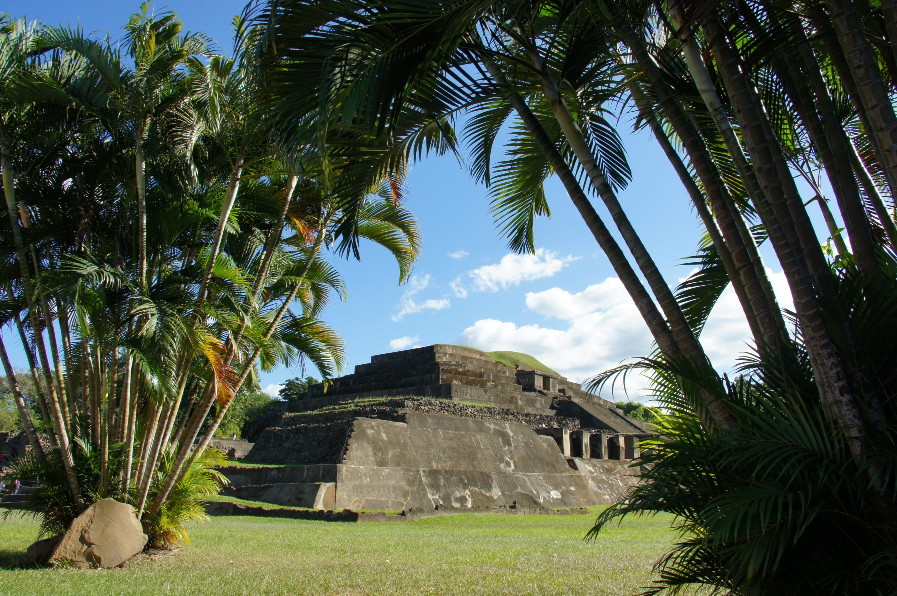
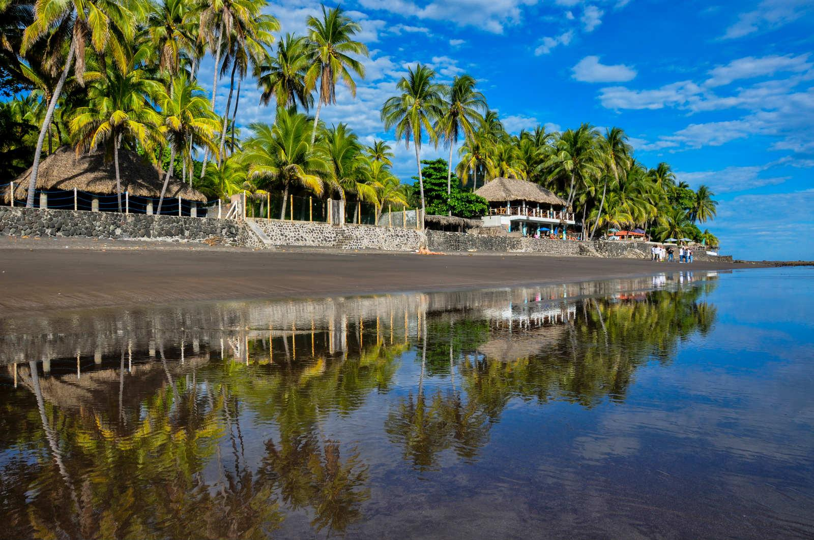

Santa Ana Volcano
One of the highest volcanoes in El Salvador, offering stunning views and hiking adventures.

Joya de Cerén
An ancient Mayan village preserved under volcanic ash, often called the "Pompeii of the Americas".

El Zonte Beach
A famous surfing destination known for its waves and beautiful coastline.